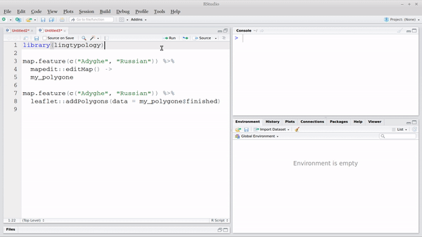

lingtypology and other packages
George Moroz
2021-03-10
Source:vignettes/lingtypology_dplyr.Rmd
lingtypology_dplyr.Rmd
1. dplyr and magritr %>%
It is possible to use dplyr functions and pipes with lingtypology. It is widely used, so I will give some examples, how to use it with thelingtypology package. Using query “list of languages csv” I found Vincent Garnier’s languages-list repository. Let’s download and map all the languages from that set. First download the data:
As we see, some values of the Language.name variable contain more than one language name. Some of the names probably have different names in our database. Imagine that we want to map all languages from Africa. So that the following examples work correctly, use library(dplyr).
library(dplyr)
new_data %>%
mutate(Language.name = gsub(pattern = " ", replacement = "", Language.name)) %>%
filter(is.glottolog(Language.name) == TRUE) %>%
filter(area.lang(Language.name) == "Africa") %>%
select(Language.name) %>%
map.feature()We start with a dataframe, here a new_data. First we remove spaces at the end of each string. Then we check, whether the language names are in the glottolog database. Then we select only rows that contain languages of Africa. Then we select the Language.name variable. And the last line maps all selected languages.
By default, the values that came from the pipe are treated as the first argument of a function. But when there are some additional arguments, point sign specify what exact position should be piped to. Let’s produce the same map with a minimap.
new_data %>%
mutate(Language.name = gsub(pattern = " ", replacement = "", Language.name)) %>%
filter(is.glottolog(Language.name) == TRUE) %>%
filter(area.lang(Language.name) == "Africa") %>%
select(Language.name) %>%
map.feature(., minimap = TRUE)
2. leaflet, leaflet.extras, mapview, mapedit
There is also a possibility to use lingtypology with other leaflet functions (thanks to Niko Partanen for the idea):
library(leaflet)
map.feature(c("French", "Occitan")) %>%
fitBounds(0, 40, 10, 50) %>%
addPopups(2, 48, "Great day!")If you add leaflet arguments befor map.feature function, you need to use argument pipe.data = .:
leaflet() %>%
fitBounds(0, 40, 10, 50) %>%
addPopups(2, 48, "Great day!") %>%
map.feature(c("French", "Occitan"), pipe.data = .)The other usage of this pipe.data argument is to put there a variable with a leaflet object:
m <- leaflet() %>%
fitBounds(0, 40, 10, 50) %>%
addPopups(2, 48, "Great day!")
map.feature(c("French", "Occitan"), pipe.data = m)If you want to define tiles in leaflet part, you need to change tile argument in map.feature function, because the default value for the tile argument is “OpenStreetMap.Mapnik”.
leaflet() %>%
addProviderTiles("Stamen.TonerLite") %>%
fitBounds(0, 40, 10, 50) %>%
addPopups(2, 48, "Great day!") %>%
map.feature(c("French", "Occitan"), pipe.data = ., tile = "none")It is also possible to use some tools provided by leaflet.extras package:
map.feature(c("French", "Occitan")) %>%
leaflet.extras::addDrawToolbar() %>%
leaflet.extras::addStyleEditor()
map.feature(c("French", "Occitan")) %>%
leaflet.extras::addFullscreenControl()Also there is a nice package mapedit that provide a possibility of creating and editing of leaflet objects by hand:
map.feature(c("Adyghe", "Russian")) %>%
mapedit::editMap() ->
my_polygone
map.feature(c("Adyghe", "Russian")) %>%
leaflet::addPolygons(data = my_polygone$finished)
3. Combining maps in a grid and facetisation with mapview
The leafsync package provides a possibility to create a multiple maps in a grid and even synchronise them. There are two functions for that: latticeview() and sync(). Facetisation is a really powerfull tool (look for facet_grid() and facet_wrap() functions from ggplot2). lingtypology doesn’t provide a facetisation itself, but the facet argument of the map.feature() function create a list of maps based on this variable. The result of the work of this function then is changed: instead of creating a map in Viewer pane it will return a list that could be used in latticeview() and sync() functions from the leafsync package.
faceted <- map.feature(circassian$language,
latitude = circassian$latitude,
longitude = circassian$longitude,
features = circassian$dialect,
facet = circassian$language)
library(leafsync)
sync(faceted, no.initial.sync = FALSE)As you can see we provided a circassian$language to the facet argument, so it returned a list of two maps that stored in faceted variable.
It is also possible to combine any maps that were created, just store them in a variable, and combine them in latticeview() and sync() functions
m1 <- map.feature(lang.aff("Tsezic"), label = lang.aff("Tsezic"))
m2 <- map.feature(lang.aff("Avar-Andi"), label = lang.aff("Avar-Andi"))
sync(m1, m2)
4. Get data from OpenStreetMap with overpass
This section is inspired by talk with Niko Partanen and his gist. Overpass is a packge with tools to work with the OpenStreetMap (OSM) Overpass API. Explore simple Overpass queries with overpass turbo. Imagine that we need to get all settlements from Ingushetia, Daghestan and Chechnya. So, first, load a library:
library(overpass)Create a query:
settlements <- 'area[name~"Дагестан|Ингушетия|Чечня"];
(node["place"~"city|village|town|hamlet"](area););
out;'Pass the query to overpass_query() function and change the input result to dataframe:
query_result <- overpass_query(settlements)
settlement_data <- as.data.frame(query_result[, c("id", "lon", "lat", "name")])Some values could be NA, so I profer clean it with complete.cases() function:
settlement_data <- settlement_data[complete.cases(settlement_data),]On the last step, I will use a “fake” language argument to avoid the creation of some Glottolog links:
map.feature(language = "fake",
latitude = settlement_data$lat,
longitude = settlement_data$lon,
label = settlement_data$name)Results are not ideal: there are some villages Дагестанская and Красный Дагестан in Adygeya and Krasnodarskiy district, but the most points are correct. It is also possible to get all data from some polygone created with mapedit (see previous section).
5. Create your own atlas with rmarkdown
This section is inspired by talk with Niko Partanen. It is possible to create an atlas website using lingtypology and rmarkdown packages. The function atlas.database() creates a folder in the working directory that contains an rmarkdown template for a web-site.
First, lets create a dataframe with some data.
df <- wals.feature(c("1a", "20a"))Second we can create a website using atlas.database() function:
-
languagesargument is a language list -
featuresargument is a data.frame with corresponding features -
latitudeandlongitudearguments are optional
atlas.database(languages = df$language,
features = df[,c(4:5)],
latitude = df$latitude,
longitude = df$longitude,
atlas.name = "Some WALS features",
author = "Author Name")We can see that this function creates a subfolder with following files:
list.files("./atlas_Some_WALS_features/")The last step is to run a command:
rmarkdown::render_site("./atlas_Some_WALS_features/")Then the atlas website will be created (here is a result). If you want to change something in the website, just change some files:
- write information about atlas in index.Rmd file
- list citation information
- change any
.Rmdfile - …
- and on the end rerun the
rmarkdown::render_site("./atlas_Some_WALS_features/")command.
6. Create .kml file using sp and rgdal
.kml file is a common file type for geospatial data. This kind of files are used in Google Earth, Gabmap (a web application that visualizes dialect variations) and others. In order to produce a .kml file you need to have a dataset with coordinates such as circassian:
sp::coordinates(circassian) <- ~longitude+latitude
sp::proj4string(circassian) <- sp::CRS("+proj=longlat +datum=WGS84")
rgdal::writeOGR(circassian["village"],
"circassian.kml",
layer="village",
driver="KML")